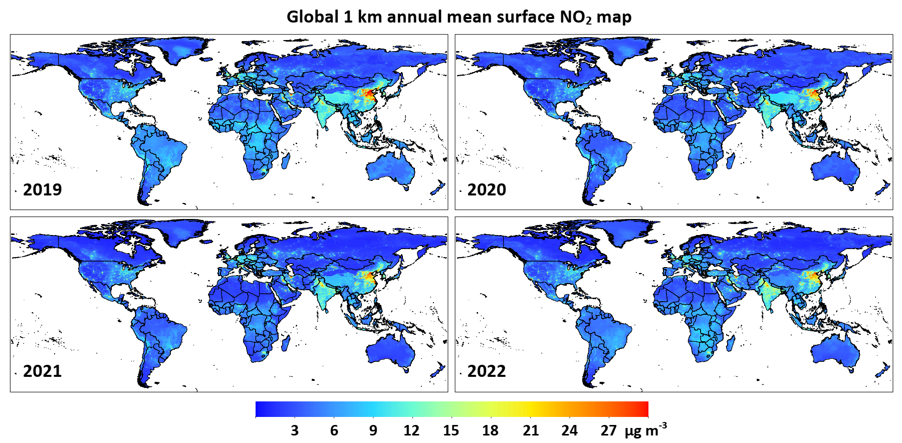
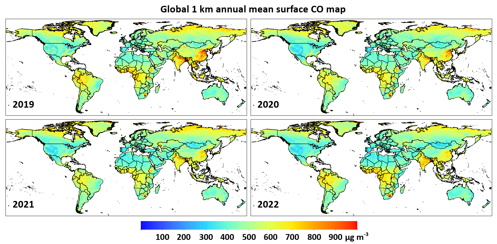
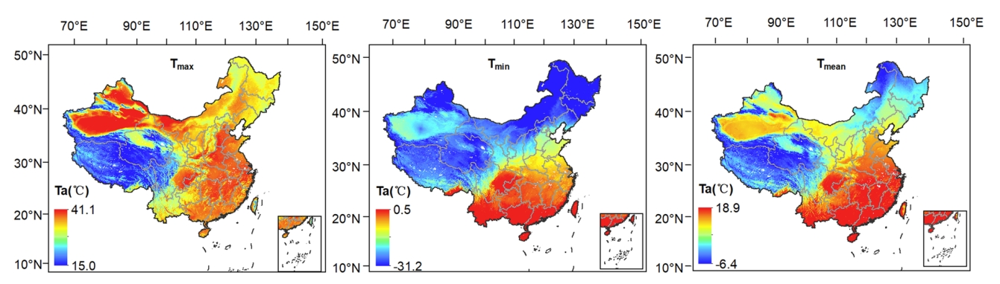

GlobalHighAirPollutants (GHAP) | ChinaHighAirPollutants (CHAP) | USHighAirPollutants (USHAP)
Brief Introduction
The GlobalHighAirPollutants (GHAP) dataset refers to the long-term, full-coverage, high-resolution, and high-quality datasets of global ground-level air pollutants over land. Similarly, it is generated from the big data using artificial intelligence by considering the spatiotemporal heterogeneity of air pollution, and now it contains PM2.5 (1 km), NO2 (1 km), CO (1 km), and O3 (10 km), and more species of air pollutants will be generated in the future.
GlobalHighPM2.5 dataset
Big data (seamless): 1 km, 2000-Present, Daily/Monthly/Yearly (Version 2)
Link: 【Zenodo】, 【Google Earth Engine】, 【国家地球系统科学数据中心】, 【国家青藏高原科学数据中心】
Reference: Wei, J., Li, Z., Lyapustin, A., Wang, J., Dubovik, O., Schwartz, J., Sun, L., Li, C., Liu, S., and Zhu, T. First close insight into global daily gapless 1 km PM2.5 pollution, variability, and health impact. Nature Communications, 2023, 14, 8349. https://doi.org/10.1038/s41467-023-43862-3
GlobalHighO3 dataset
Big data (seamless): 10 km, 2000-Present, Daily/Monthly/Yearly (Version 1)
Link: 【Zenodo】
Reference: Wei, J., et al. In preparation.

GlobalHighNO2 dataset
Big data (seamless): 1 km, 2019-Present, Daily/Monthly/Yearly (Version 1)
Link: 【Zenodo】
Reference: Wei, J., Li, Z., et al. In preparation.
GlobalHighCO dataset
Big data (seamless): 1 km, 2019-Present, Daily/Monthly/Yearly (Version 1)
Link: 【Zenodo】
Reference: Wei, J., Li, Z., et al. In preparation.
Brief Introduction
The ChinaHighAirPollutants (CHAP) dataset refers to the long-term, full-coverage, high-resolution, and high-quality datasets of ground-level air pollutants for China. It is generated from the big data (e.g., ground-based measurements, satellite remote sensing products, atmospheric reanalysis, and model simulations) using artificial intelligence by considering the spatiotemporal heterogeneity of air pollution. The CHAP dataset contains 7 major air pollutants (i.e., PM1, PM2.5, PM10, O3, NO2, SO2, and CO), PM2.5 chemical composition (i.e., SO42-, NO3-, NH4+, Cl-, BC, and OM), and ambient polycyclic aromatic hydrocarbons (PAHs), including 7 carcinogenic PAHs (i.e., BaA, Chr, BbF, BkF, BaP, DahA, IcdP). This CHAP dataset is public and freely open to all users!
Open Platform
【GitHub】, 【Zenodo】, 【国家地球系统科学数据中心】, 【国家青藏高原科学数据中心】
Dataset summary

ChinaHighPM2.5 dataset
[1] Big data (seamless): 1 km, 2000-Present, Daily/Monthly/Yearly (Version 4)
Link: 【Zenodo】, 【国家地球系统科学数据中心】, 【国家青藏高原科学数据中心】
Reference:
Wei, J., Li, Z., Lyapustin, A., Sun, L., Peng, Y., Xue, W., Su, T., and Cribb, M. Reconstructing 1-km-resolution high-quality PM2.5 data records from 2000 to 2018 in China: spatiotemporal variations and policy implications. Remote Sensing of Environment, 2021, 252, 112136. https://doi.org/10.1016/j.rse.2020.112136 (ESI Hot and Highly Cited Paper, Journal Most Cited Articles since 2019/2020, Top 100 Most Cited Chinese Papers Published in International Journals, ESSIC 2022 Best Paper Award)
Wei, J., Li, Z., Cribb, M., Huang, W., Xue, W., Sun, L., Guo, J., Peng, Y., Li, J., Lyapustin, A., Liu, L., Wu, H., and Song, Y. Improved 1 km resolution PM2.5 estimates across China using enhanced space-time extremely randomized trees. Atmospheric Chemistry and Physics, 2020, 20, 3273–3289. https://doi.org/10.5194/acp-20-3273-2020 (ESI Hot and Highly Cited Paper)
[2] Himawari-8: Eastern China, 5 km, 2018, Hourly (Version 1)
Link: 【Zenodo】
Reference: Wei, J., Li, Z., Pinker, R., Wang, J., Sun, L., Xue, W., Li, R., and Cribb, M. Himawari-8-derived diurnal variations of ground-level PM2.5 pollution across China using a fast space-time Light Gradient Boosting Machine (LightGBM). Atmospheric Chemistry and Physics, 2021, 21, 7863–7880. https://doi.org/10.5194/acp-21-7863-2021 (ESI Highly Cited Paper)

ChinaHighPMC dataset
Big data (seamless): 1 km, 2000-Present, Daily/Monthly/Yearly (Version 1)
Link: 【Zenodo】, 【国家地球系统科学数据中心】, 【国家青藏高原科学数据中心】
Reference: Wei, J., Li, Z., Chen, X., Li, C., Sun, Y., Wang, J., Lyapustin, A., Brasseur, G., Jiang, M., Sun, L., Wang, T., Jung, C., Qiu, B., Fang, C., Liu, X., Hao, J., Wang, Y., Zhan, M., Song, X., and Liu, Y. Separating daily 1 km PM2.5 inorganic chemical composition in China since 2000 via deep learning integrating ground, satellite, and model data. Environmental Science & Technology, 2023, 57(46), 18282–18295. https://doi.org/10.1021/acs.est.3c00272 (ESI Highly Cited Paper)

ChinaHighPM1 dataset
Big data (seamless): 1 km, 2000-Present, Daily/Monthly/Yearly (Version 3)
Link: 【Zenodo】
Reference: Wei, J., Li, Z., Guo, J., Sun, L., Huang, W., Xue, W., Fan, T, and Cribb, M. Satellite-derived 1-km-resolution PM1 concentrations from 2014 to 2018 across China. Environmental Science & Technology, 2019, 53(22), 13265-13274. https://doi.org/10.1021/acs.est.9b03258 (ESI Hot and Highly Cited Paper)

ChinaHighPM10 dataset
Big data (seamless): 1 km, 2000-Present, Daily/Monthly/Yearly (Version 4)
Link: 【Zenodo】, 【国家地球系统科学数据中心】, 【国家青藏高原科学数据中心】
Reference: Wei, J., Li, Z., Xue, W., Sun, L., Fan, T., Liu, L., Su, T., and Cribb, M. The ChinaHighPM10 dataset: generation, validation, and spatiotemporal variations from 2013 to 2019 across China. Environment International, 2021, 146, 106290. https://doi.org/10.1016/j.envint.2020.106290 (ESI Highly Cited Paper)

ChinaHighO3 dataset
[1] Big data (seamless): 1 km, 2000-Present, Daily/Monthly/Yearly (Version 2)
Link: 【Zenodo】, 【国家地球系统科学数据中心】, 【国家青藏高原科学数据中心】
Reference:
Wei, J., Li, Z., Li, K., Dickerson, R., Pinker, R., Wang, J., Liu, X., Sun, L., Xue, W., and Cribb, M. Full-coverage mapping and spatiotemporal variations of ground-level ozone (O3) pollution from 2013 to 2020 across China. Remote Sensing of Environment, 2022, 270, 112775. https://doi.org/10.1016/j.rse.2021.112775 (ESI Hot and Highly Cited Paper)
Yang, Z., Li, Z., Cheng, F., Lv, Q., Li, K., Zhang, T., Zhou, Y., Zhao, B., Xue, W., and Wei, J. Two-decade surface ozone (O3) pollution in China: enhanced fine-scale estimations and environmental health implications. Remote Sensing of Environment, 2025, 317, 114459. https://doi.org/10.1016/j.rse.2024.114459
[2] Big data (seamless): 1 km, 2019, Hourly (Version 1)
Link: 【Zenodo】
Reference: Cheng, F., Li, Z., Yang, Z., Li, R., Wang, D., Jia, A., Li, K., Zhao, B., Wang, S., Yin, D., Li, S., Xue, W., Cribb, M., and Wei, J. First retrieval of 24-hourly 1-km-resolution gapless surface ozone (O3) from space in China using artificial intelligence: diurnal variations and implications for air quality and phytotoxicity. Remote Sensing of Environment, 2025, 316, 114482. https://doi.org/10.1016/j.rse.2024.114482

ChinaHighNO2 dataset
[1] Big data (seamless): 1 km, 2019-Present, Daily/Monthly/Yearly (Version 2)
Link: 【Zenodo】, 【国家地球系统科学数据中心】, 【国家青藏高原科学数据中心】
Reference: Wei, J., Liu, S., Li, Z., Liu, C., Qin, K., Liu, X., Pinker, R., Dickerson, R., Lin, J., Boersma, K., Sun, L., Li, R., Xue, W., Cui, Y., Zhang, C., and Wang, J. Ground-level NO2 surveillance from space across China for high resolution using interpretable spatiotemporally weighted artificial intelligence. Environmental Science & Technology, 2022, 56(14), 9988–9998. https://doi.org/10.1021/acs.est.2c03834 (ESI Highly Cited Paper)
[2] Big data (seamless): 10 km, 2008-2018, Daily/Monthly/Yearly (Version 1)
Link: 【Zenodo】, 【国家地球系统科学数据中心】, 【国家青藏高原科学数据中心】
Reference: Wei, J., Li, Z., Wang, J., Li, C., Gupta, P., and Cribb, M. Ground-level gaseous pollutants (NO2, SO2, and CO) in China: daily seamless mapping and spatiotemporal variations. Atmospheric Chemistry and Physics, 2023, 23, 1511–1532. https://doi.org/10.5194/acp-23-1511-2023 (ESI Hot and Highly Cited Paper)

ChinaHighSO2 dataset
[1] Big data (seamless): 1 km, 2019-Present, Daily/Monthly/Yearly (Version 2)
Link: 【Zenodo】, 【国家地球系统科学数据中心】, 【国家青藏高原科学数据中心】
[2] Big data (seamless): 10 km, 2013-2018, Daily/Monthly/Yearly (Version 1)
Link: 【Zenodo】, 【国家地球系统科学数据中心】, 【国家青藏高原科学数据中心】
Reference: Wei, J., Li, Z., Wang, J., Li, C., Gupta, P., and Cribb, M. Ground-level gaseous pollutants (NO2, SO2, and CO) in China: daily seamless mapping and spatiotemporal variations. Atmospheric Chemistry and Physics, 2023, 23, 1511–1532. https://doi.org/10.5194/acp-23-1511-2023 (ESI Hot and Highly Cited Paper)

ChinaHighCO dataset
[1] Big data (seamless): 1 km, 2019-Present, Daily/Monthly/Yearly (Version 2)
Link: 【Zenodo】, 【国家地球系统科学数据中心】, 【国家青藏高原科学数据中心】
[2] Big data (seamless): 10 km, 2013-2018, Daily/Monthly/Yearly (Version 1)
Link: 【Zenodo】, 【国家地球系统科学数据中心】, 【国家青藏高原科学数据中心】
Reference: Wei, J., Li, Z., Wang, J., Li, C., Gupta, P., and Cribb, M. Ground-level gaseous pollutants (NO2, SO2, and CO) in China: daily seamless mapping and spatiotemporal variations. Atmospheric Chemistry and Physics, 2023, 23, 1511–1532. https://doi.org/10.5194/acp-23-1511-2023 (ESI Hot and Highly Cited Paper)

ChinaHighPAH dataset
Big data (seamless): 10 km, 2013-2020, Daily/Monthly/Yearly (Version 1)
Link: 【Zenodo】 (This dataset is only available upon request)
Reference: Zhang, Y., Wang, Y., Zheng, H., and Wei, J. Increased mortality risk from airborne exposure to polycyclic aromatic hydrocarbons. Journal of Hazardous Materials, 2024, 474, 134714. https://doi.org/10.1016/j.jhazmat.2024.134714

ChinaHighTEM dataset
Big data (seamless): 1 km, 2003-Present, Daily Average/Maximum/Minimum (Version 1)
TEMavg: 【Zenodo】，TEMmin: 【Zenodo】， TEMmax: 【Zenodo】
Reference: Wang, M., Wei, J., Wang, X., Luan, Q., and Xu, X. Reconstruction of all-sky daily air temperature datasets with high accuracy in China from 2003 to 2022. Scientific Data, 2024, 11, 1133. https://doi.org/10.1038/s41597-024-03980-z
Brief Introduction
The USHighAirPollutants (USHAP) dataset refers to the long-term, full-coverage, high-resolution, and high-quality datasets of ground-level air pollutants for the Continental United States. Similarly, it is generated from the big data using artificial intelligence by considering the spatiotemporal heterogeneity of air pollution, and now it contains PM2.5 and BC (1 km), and more species of air pollutants will be generated in the future.
USHighPM2.5 dataset
Big data (seamless): 1 km, 2000-Present, Daily/Monthly/Yearly (Version 1)
Link: 【Zenodo】
USHighBC dataset
Big data (seamless): 1 km, 2000-Present, Daily/Monthly/Yearly (Version 1)
Link: 【Zenodo】
Reference: Wei, J., Wang, J., Li, Z., Kondragunta, S., Anenberg, S., Wang, Y., Zhang, H., Diner, D., Hand, J., Lyapustin, A., Kahn, R., Colarco, P., da Silva, A., and Ichoku, C. Long-term mortality burden trends attributed to black carbon and PM2.5 from wildfire emissions across the continental USA from 2000 to 2020: a deep learning modelling study. The Lancet Planetary Health, 2023, 7, e963–e975. https://doi.org/10.1016/S2542-5196(23)00235-8.
Dataset codes
Data type conversion (from .nc to .tif): [1] Python code; [2] Matlab code; [3] IDL code; [4] R code
News/reports on our dataset
University of Maryland: Li and Wei Published on Air Pollution in China
Beijing Normal University: Dr. Jing Wei released the high-resolution and high-quality air pollution dataset in China
Publications using our dataset (400+)
Highlights (16)
Cai, M., Lin, X., Wang, X., et al. Ambient particulate matter pollution of different sizes associated with recurrent stroke hospitalization in China: A cohort study of 1.07 million stroke patients. Science of The Total Environment, 2023, 856, 159104. https://doi.org/10.1016/j.scitotenv.2022.159104 (ESI Highly Cited Paper)
Cai, M., Wei, J., Zhang, S., et al. Short-term air pollution exposure associated with death from kidney diseases: a nationwide time-stratifed case-crossover study in China from 2015 to 2019. BMC Medicine, 2023, 21, 32. https://doi.org/10.1186/s12916-023-02734-9 (ESI Highly Cited Paper)
Cai, M., Zhang, S., Lin, X., et al. Association of ambient particulate matter pollution of different sizes with in-hospital case fatality among stroke patients in China. Neurology, 2022, 98, 24. https://doi.org/10.1212/WNL.0000000000200546 (ESI Highly Cited Paper)
Guo, J., Zhou, J., Han, R., et al. Association of short-term co-exposure to particulate matter and ozone with mortality risk. Environmental Science & Technology, 2023, 57(42), 15825–15834. https://doi.org/10.1021/acs.est.3c04056 (Journal Cover Article)
He, Q., Lang, X., Shen, H., et al. Impact of extreme temperature on congenital heart disease mortality: a population-based nationwide case-crossover study. The Lancet Regional Health – Western Pacific, 2024, 53, 101244. https://doi.org/10.1016/j.lanwpc.2024.101244
Huang, W., Zhou, Y., Chen, X., et al. Individual and joint associations of long-term exposure to air pollutants and cardiopulmonary mortality: a 22-year cohort study in Northern China. The Lancet Regional Health – Western Pacific, 2023, 100776. https://doi.org/10.1016/j.lanwpc.2023.100776
Lin, L., Yi, X., Liu, H., et al. The airway microbiome mediates the interaction between environmental exposure and respiratory health in humans. Nature Medicine, 2023, 29, 1750–1759. https://doi.org/10.1038/s41591-023-02424-2
Liu, H., Lei, J., Liu, Y., et al. Hospital admissions attributable to reduced air pollution due to clean-air policies in China. Nature Medicine, 2025. https://doi.org/10.1038/s41591-025-03515-y
Ma, Y., Zang, E., Liu, Y., et al. Long-term exposure to wildland fire smoke PM2.5 and mortality in the contiguous United States. PNAS, 2024, 121(40), e2403960121. https://doi.org/10.1073/pnas.2403960121
Qu, W., Hua, H., Yang, T., et al. Delayed leaf green-up is associated with fine particulate air pollution in China. Nature Communications, 2025, 16, 3406. https://doi.org/10.1038/s41467-025-58710-9
Tian, Y., Ma, Y., Wu, J., et al. Ambient PM2.5 chemical composition and cardiovascular disease hospitalizations in China. Environmental Science & Technology, 2024, 58(37), 16327–16335. https://doi.org/10.1021/acs.est.4c05718 (Journal Cover Article)
Xu, R., Huang, S., Shi, C., et al. Extreme temperature events, fine particulate matter, and myocardial infarction mortality. Circulation, 2023, 148, 312–323. https://doi.org/10.1161/CIRCULATIONAHA.122.063504 (ESI Highly Cited Paper, IF = 37.8)
Xu, H., Guo, B., Qian, W., et al. Dietary pattern and long-term effects of particulate matter on blood pressure: a large cross-sectional study in Chinese adults. Hypertension, 2021, 78, 184–194. https://doi.org/10.1161/HYPERTENSIONAHA.121.17205 (Journal High Impact Paper)
Xue, W., Zhang, J., Zhong, C., et al. Spatiotemporal PM2.5 variations and its response to the industrial structure from 2000 to 2018 in the Beijing-Tianjin-Hebei region. Journal of Cleaner Production, 2021, 279, 123742. https://doi.org/10.1016/j.jclepro.2020.123742 (ESI Highly Cited Paper)
Zhang, Y., Chen, S., Wei, J., et al. Long-term PM1 exposure and hypertension hospitalization: A causal inference study on a large community-based cohort in South China. Science Bulletin, 2024, 69(9), 1313-1322. https://doi.org/10.1016/j.scib.2024.03.028
Zhang, Z., Wang, C., Lin, C., et al. Association of long-term exposure to ozone with cardiovascular mortality and its metabolic mediators: evidence from a nationwide, population-based, prospective cohort study. The Lancet Regional Health – Western Pacific, 2024, 52, 101222. https://doi.org/10.1016/j.lanwpc.2024.101222
-------------------------------------------------------------
Welcome to use our dataset for related scientific research! Note that this dataset is continuously updated, and if you need longer-period or higher temporal-resolution (e.g., hourly, daily or monthly) data, please contact me (weijing_rs@163.com; weijing.rs@gmail.com).
-------------------------------------------------------------
Other related air pollution datasets
[1] Global monthly merged Satellite-AERONET AOD product, Peking University (Dr. Jing Li)
[2] Tracking Air Pollution in China (TAP), Tsinghua University (Dr. Qiang Zhang and Dr. Guannan Geng)
GlobalHighAirPollutants (GHAP)
ChinaHighAirPollutants (CHAP)
USHighAirPollutants (USHAP)